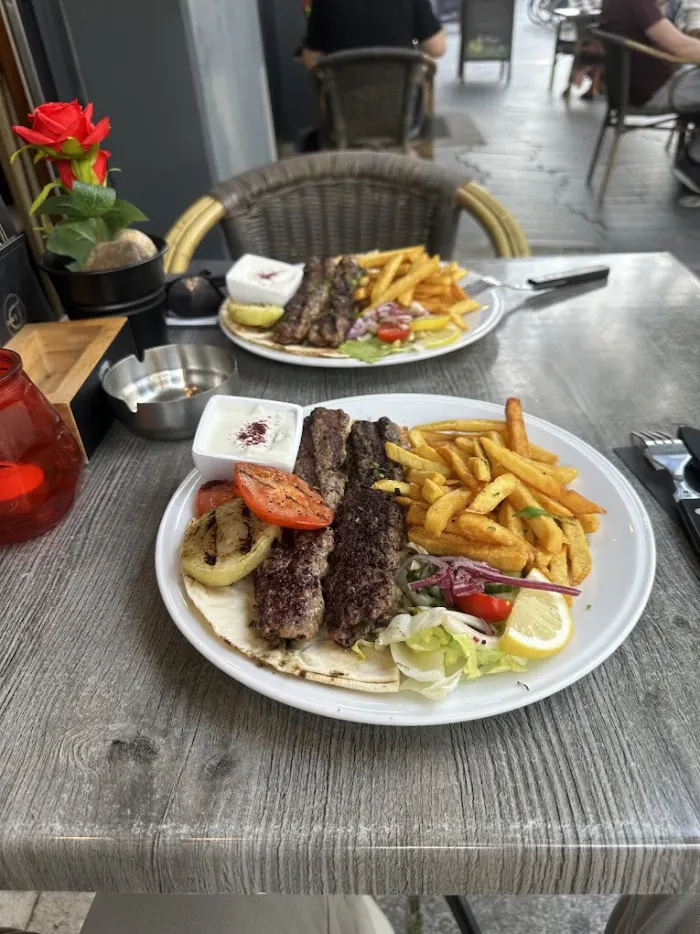
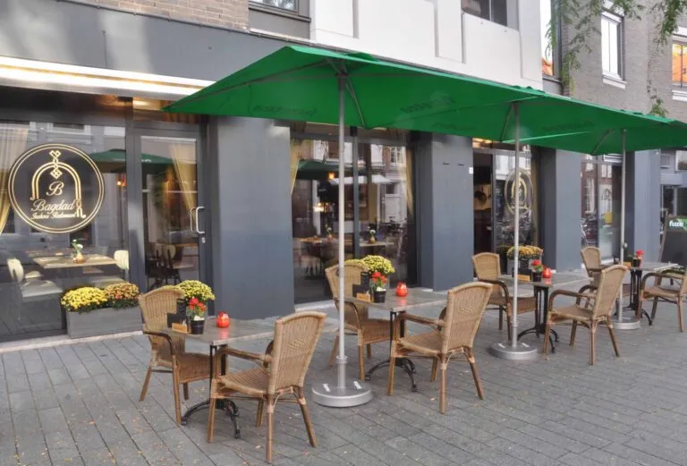
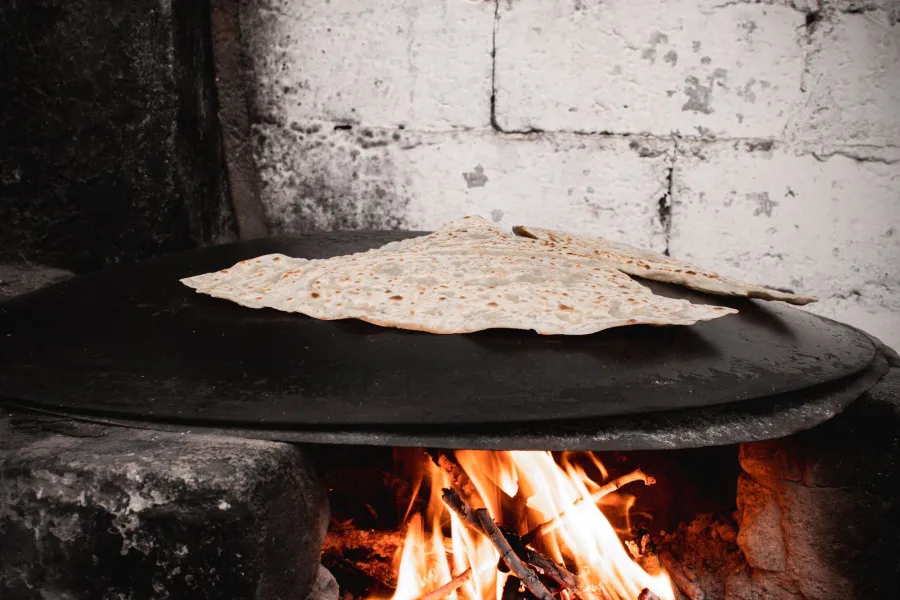
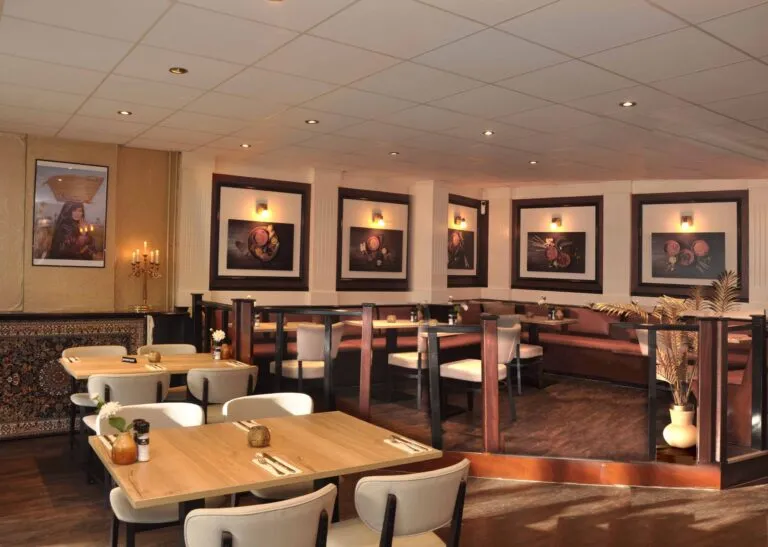
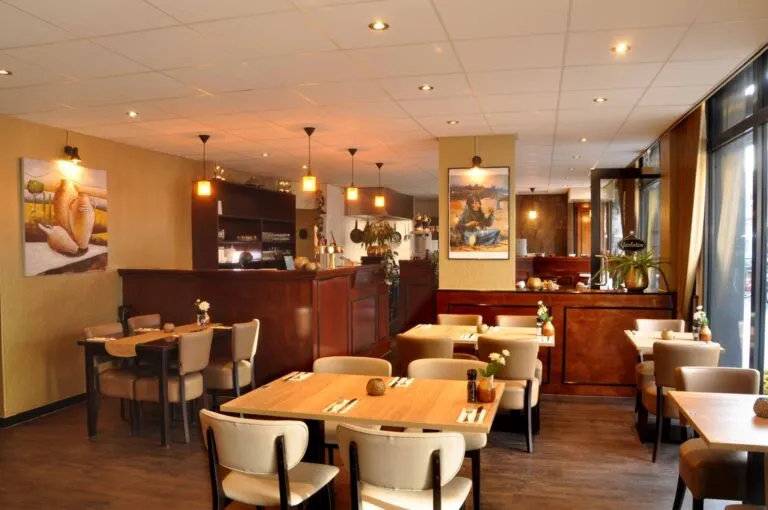
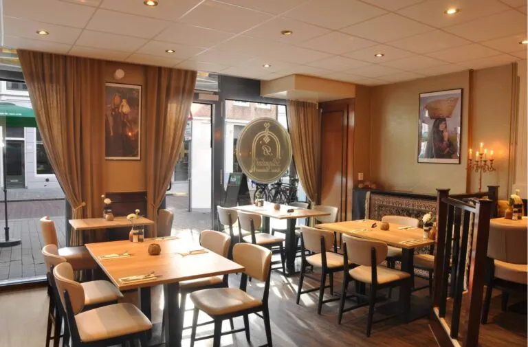
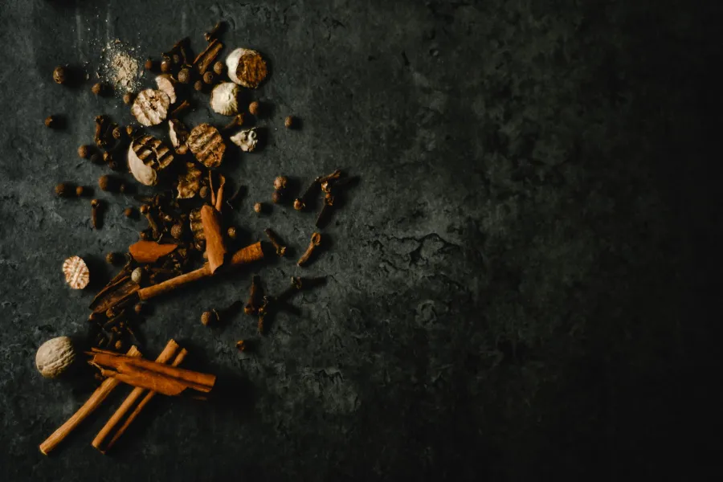
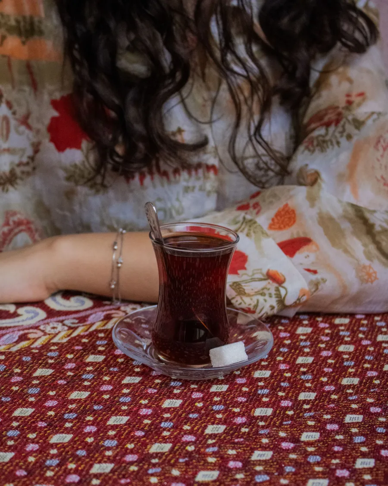
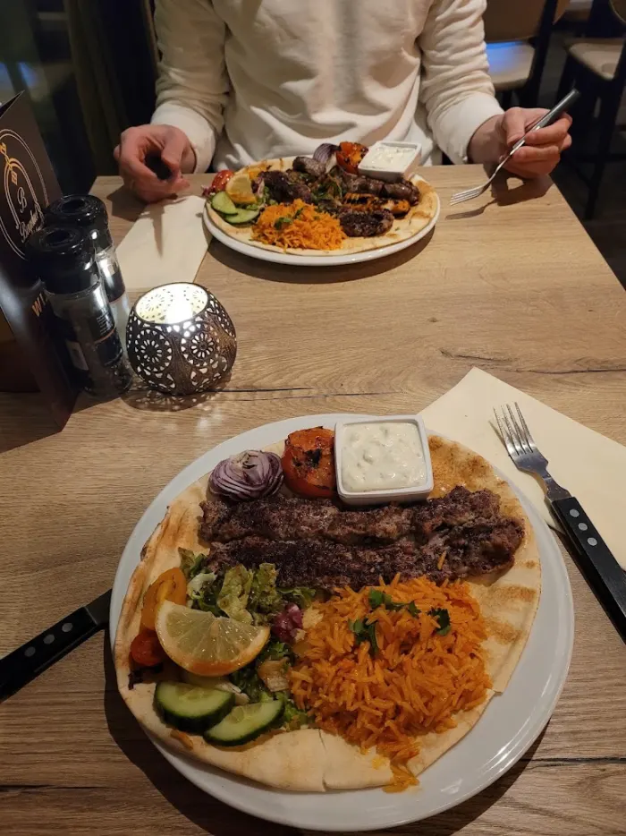
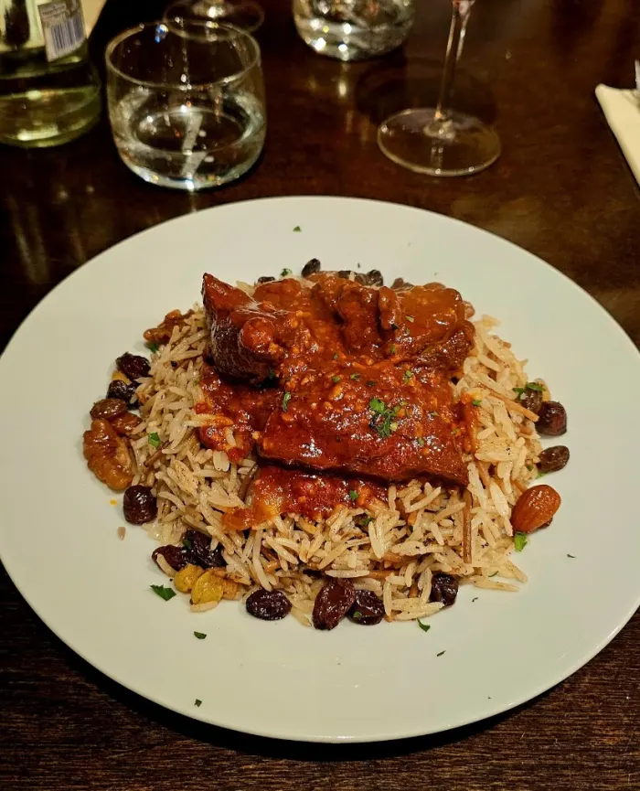

Guest photo★★★★★
Friendly hosts and a bit of a holiday feeling, because it is not your average Dutch place. A wonderful meal, and certainly not expensive.
Theo van Elswijk
أهلاً وسهلاً ahlan wa sahlan: a warm welcome
4.7 from 305 Google reviews
Our story
For years, Ahmed and his wife ran their stall at the Den Bosch market. Falafel, mezze and Iraqi dishes, freshly prepared between the stalls. Den Bosch got to know their cooking, and the regulars kept coming back.
Those customers asked for more: a place to sit down, with the full menu. So they opened their own restaurant on Orthenstraat. And the market? You will still find them there, for a falafel sandwich or their mezze.



Why Iraqi
Iraqi cuisine goes back to Mesopotamia and the court kitchens of old Baghdad. Not a Turkish grill or a Lebanese mezze bar, but a tradition of its own: slow-cooked rice dishes like Qozi and Bryani, stuffed vegetables (Dolma), Kubba of bulgur and minced meat, and sweet tea from the glass.
On Tuesday, Wednesday, Thursday and Sunday there is a changing Iraqi dish alongside the menu.
Homemade falafel, mezze, Dolma and vegetarian Bryani: half the menu works without meat.
From a quick durum at the counter to a long evening of mezze and the grill; groups up to 36 people.
The restaurant




Want more? Follow us on Instagram.
What guests say

Guest photo★★★★★
Friendly hosts and a bit of a holiday feeling, because it is not your average Dutch place. A wonderful meal, and certainly not expensive.
Theo van Elswijk

Guest photo★★★★★
A really good meal and very friendly staff. I come here often and I am happy every single time.
Ayman Hajialokab

Guest photo★★★★★
Food of perfect quality and good portions for a good price. A great combination of quality, quantity and value.
Jasper